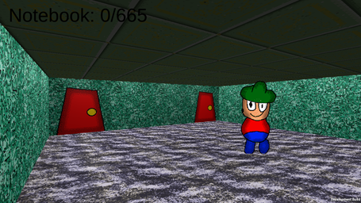

Marcello's "Fun"house is the location "Marcello's Funhouse" takes place in.
Table Of Contents
Appearance Floor Plan Gallery Trivia List Of PagesAppearance
It appears as a small home with two bedrooms and a common room. The doors are red, the walls are green, the floor is stone-like, and the ceiling is green-ish yellow tiles.
Floor Plan

Gallery
Trivia
- Marcello's House once had a couch but Marcello broke it.
- It isn't actually a Funhouse, Marcello just calls it that so people come over.
- The only person to lives in the house full-time is Marcello himself.